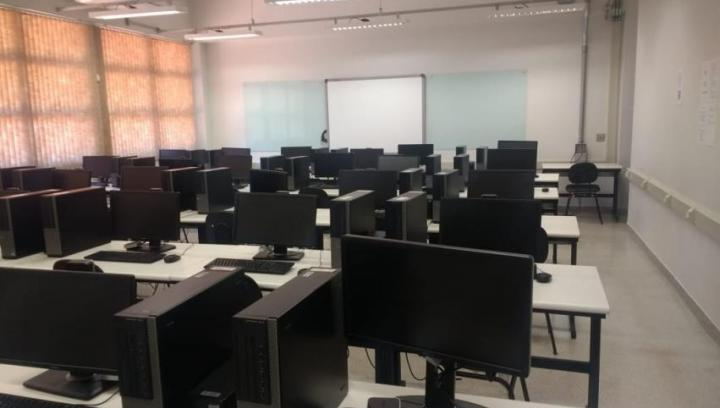

Bacharelado em Sistema de Informação - Campus Monte Carmelo
BSI-MC
Sobre o curso:
O curso de Bacharelado em Sistemas de Informação da Universidade Federal de Uberlândia Campus Monte Carmelo foi criado em 2010 e teve o seu reconhecimento em 29 de junho de 2015 por meio da Portaria 492/15 do Ministério da Educação, iniciando suas aulas em 2011.
O objetivo do curso é:
- preparar profissionais com sólida e ampla formação técnica na área de tecnologia da informação aplicada às organizações;
- desenvolver empreendedores, capazes de projetar, implementar e gerenciar a infraestrutura de tecnologia da informação envolvendo computadores, comunicação e dados em sistemas organizacionais;
- consolidar um cidadão, com competências-conhecimentos, habilidades e atitudes e com responsabilidade social, capaz de respeitar as diferenças individuais, sabendo produzir e usar a tecnologia em benefício da sociedade e com visão sistêmica de negócios.
Os egressos do curso têm obtido grande êxito na vida profissional.
A Graduação conta com um corpo docente altamente qualificado de diversas Unidades da Universidade Federal de Uberlândia, com destaque para a Faculdade de Computação.
Especificações:
- Habilitação: Bacharelado
- Regime acadêmico: Semestral
- Turno de oferta: Integral
- Duração: 4 anos
- Prazo mínimo: 3 anos
- Prazo máximo: 6 anos
Coordenador: Rafael Dias Araújo
+55 34 3810-1050 | Ramal: 1050
Secretaria: Edilamar Marcelina Cruvinel Gusmão
Endereço:
Rodovia LMG 746, Km 1
Monte Carmelo - MG